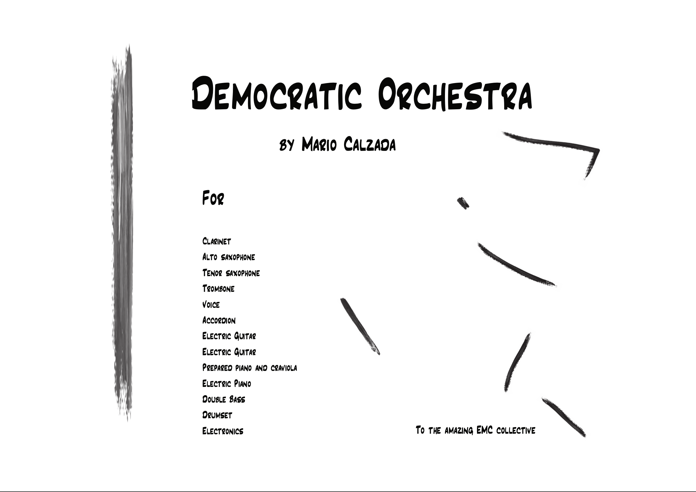
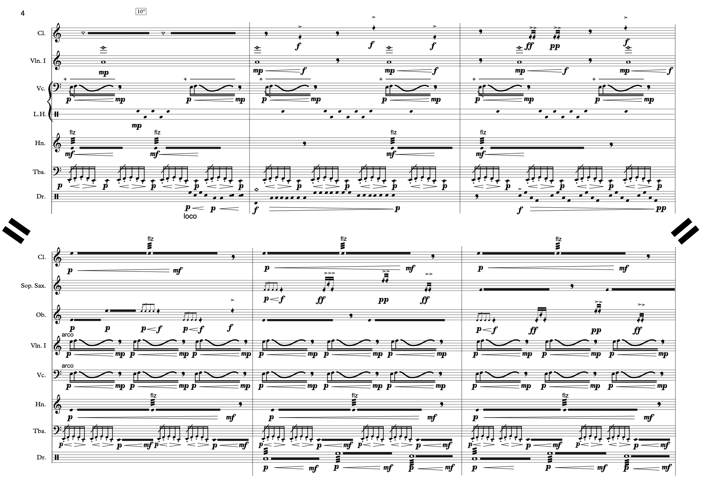
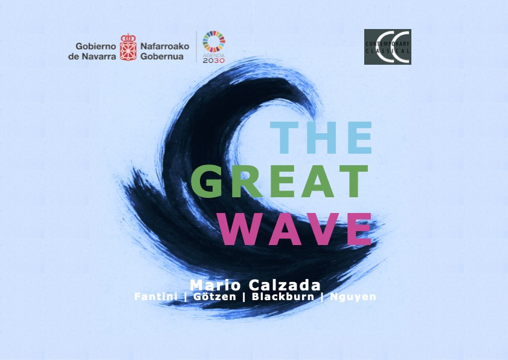
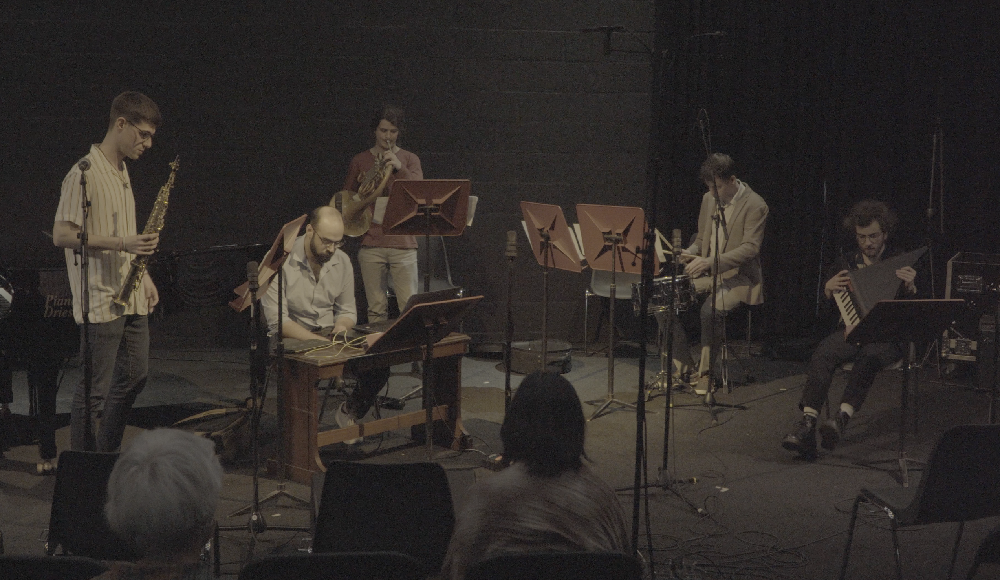
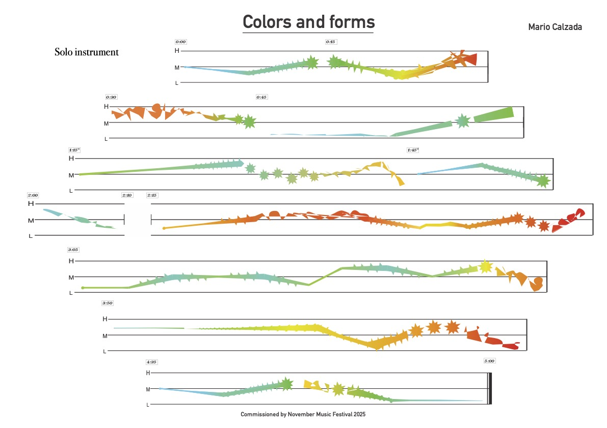
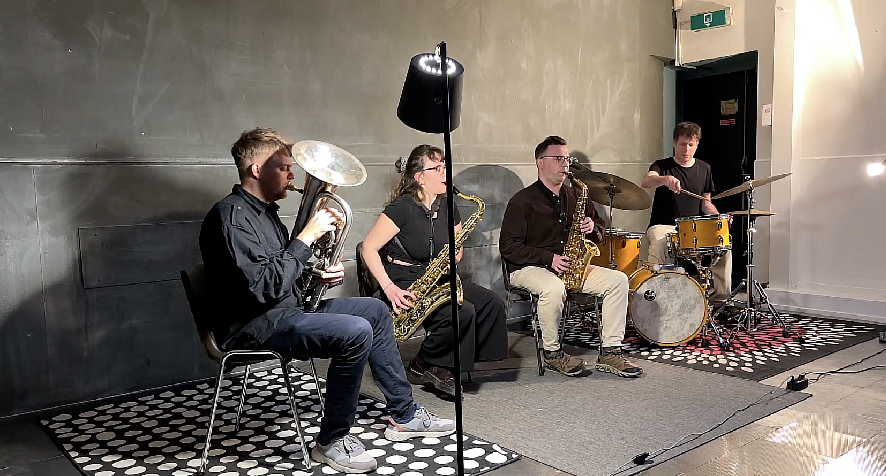
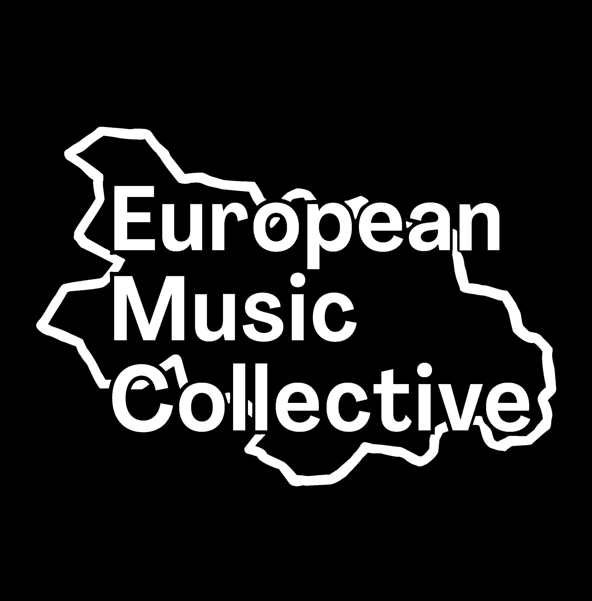
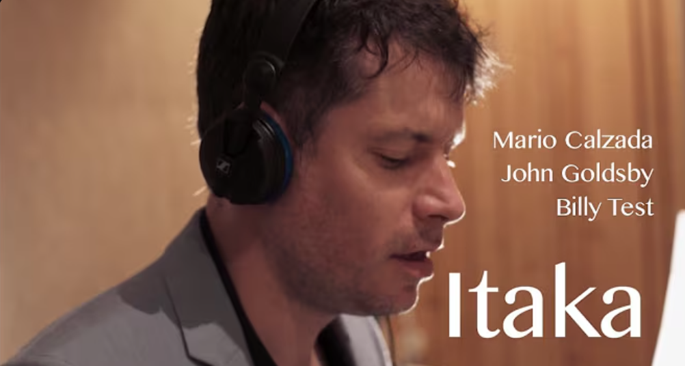

Projects
My work unfolds across composition, conduction, musical production, mixing, improvisation and education. Each project represents a long-term artistic inquiry rather than a fixed format.
Composer — Contemporary Music

The Democratic Orchestra
Multinational ensemble exploring freedom, voice and collective decision-making.

442

The Great Wave

Composer’s Workout
Celebration
Switch On

Colors and Forms
Multinational project exploring solo performances. Ongoing.
Improvisation

airkeychains
Improvisation-driven project exploring form, gesture and instant composition.

European Music Collective (EMC)
International collective focused on contemporary improvisation and collaborative authorship.
The Great Wave
Improvised performance and recording inspired by Zen philosophy and sound as movement.
Composer — Jazz
